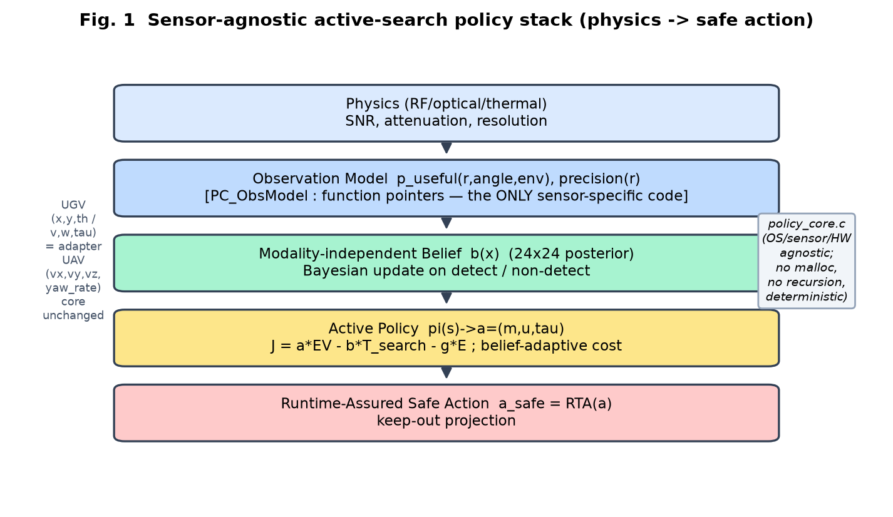
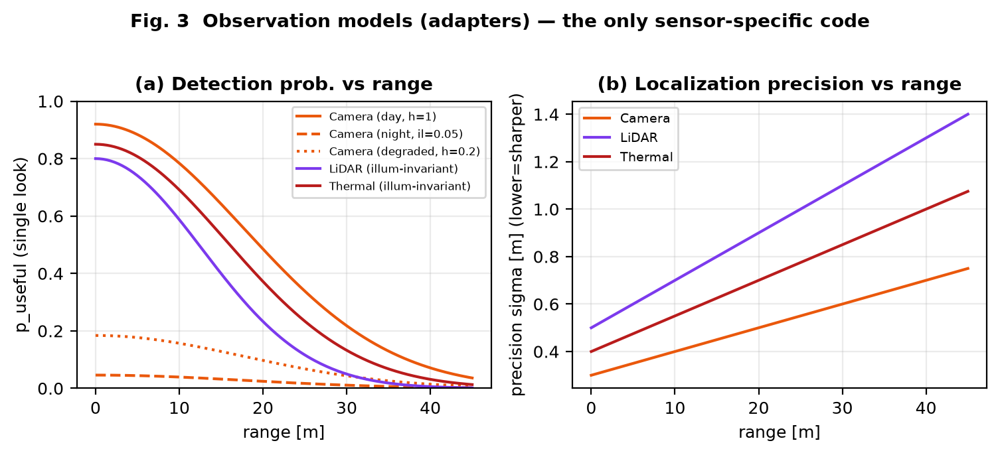
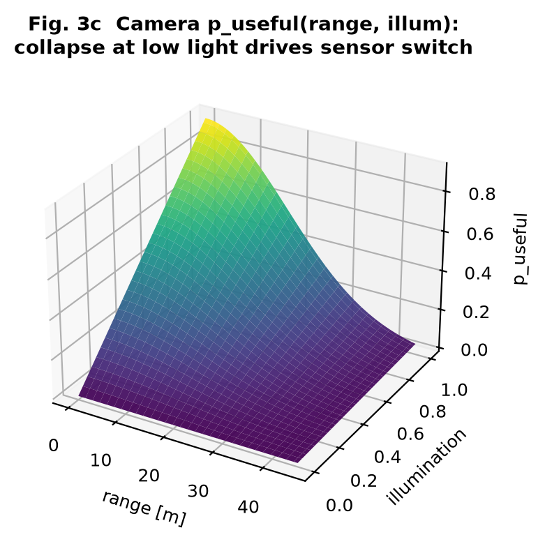
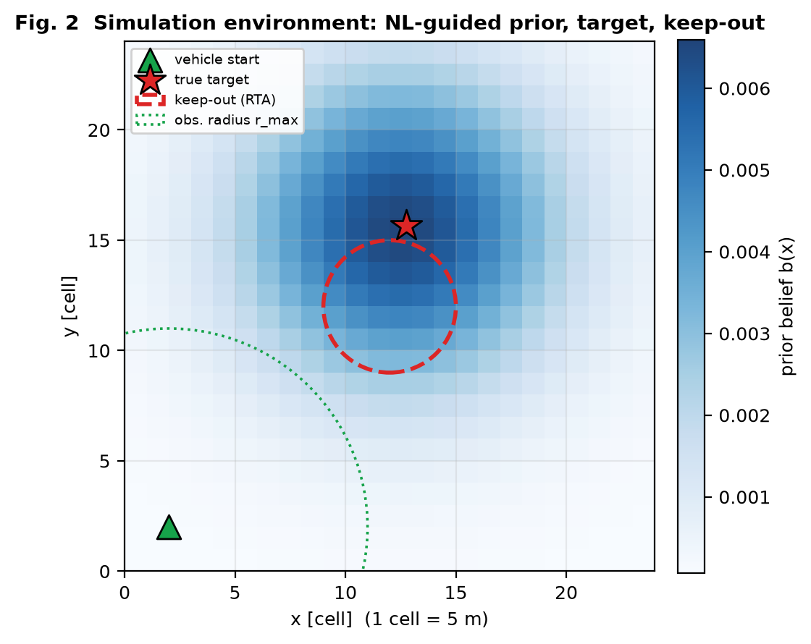
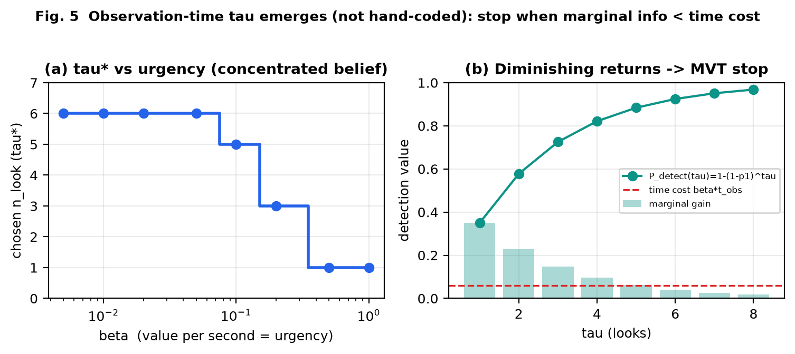
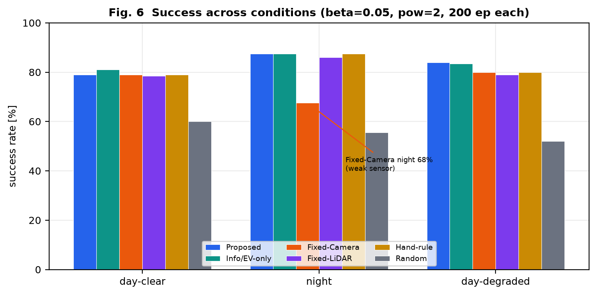
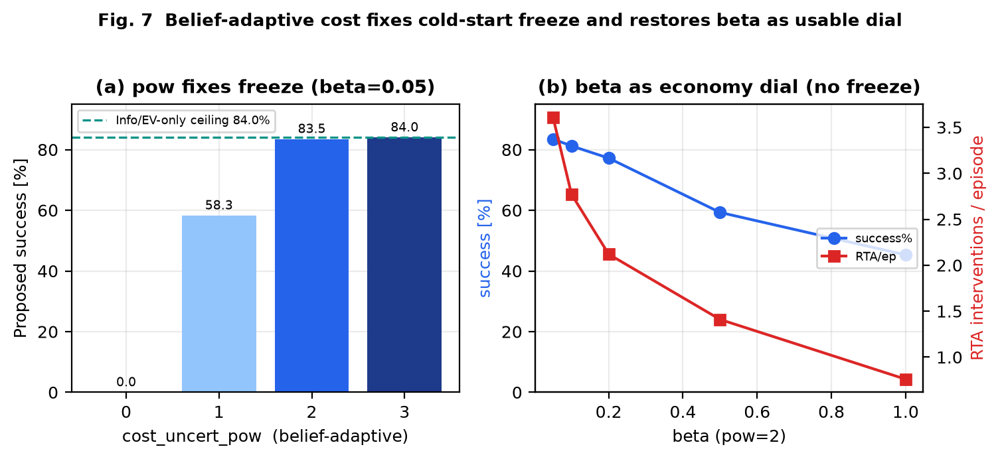
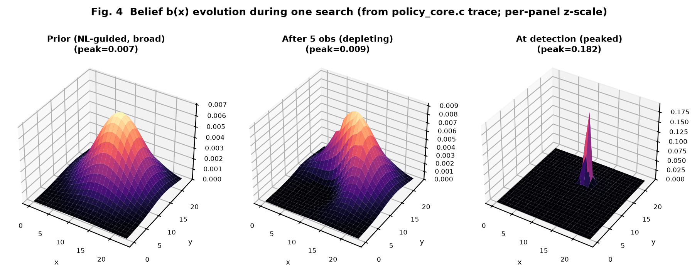
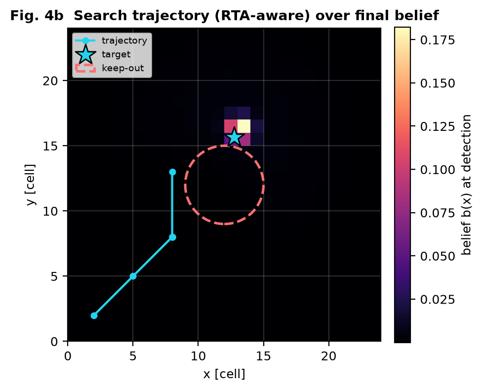
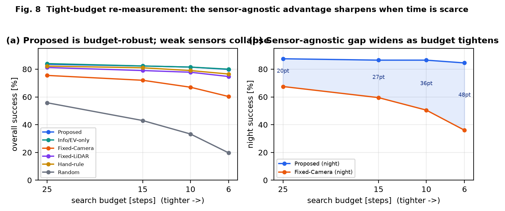

Most robotic active-search systems are built on a heavy Linux/ROS/Jetson stack and demonstrate that a particular sensor finds a target well. We invert both choices. First, we target OS-independent, bare-metal execution: the policy core must link on a microcontroller with no dynamic memory, no recursion, and deterministic timing. Second, we make the policy sensor-agnostic: the core never names a sensor; it sees only an abstract observation model. The research claim is therefore not "sensor X is good" but "the decision layer is portable, sensor-neutral, and its sensor/time choices emerge from physics."
This paper provides the full Methods and Results, the simulation environment, conditions, mathematics, physics models, and code. Prior-art positioning (GoalSwarm, AGOS, SEArch, and how our policy-centric, OS-independent framing differs) is maintained separately in the repository survey and is out of scope here. Contributions:
Fig. 1 shows the five-layer stack. Physics defines detectability and precision; an observation model layer exposes these to the core through two function pointers only; the core maintains belief, runs the policy, and hands its action to a runtime-assurance (RTA) filter. The core file policy_core.c contains no sensor, hardware, or OS dependency, so swapping a sensor means swapping an adapter, and moving UGV→UAV changes only the adapter that translates (v,ω) into (vx,vy,vz,ψ̇); the policy is unchanged.

The world is a 24×24 grid (1 cell = 5 m). Belief b(x) is a normalized posterior over the target cell, independent of sensing modality. Given an observation from cell c with model m in environment e, the update is Bayesian with a modality-supplied likelihood:
where z is the measured location and σ the model's precision. A detection sharpens belief toward z; a miss attenuates the observed footprint, which pushes probability mass toward unobserved cells — the implicit exploration signal. Belief entropy H(b) = −Σ b log b quantifies uncertainty (used below).
Each sensor is an adapter exposing puseful(r,θ,e) (single-look useful-detection probability) and precision(r) (localization sharpness, m). Table II lists the models used; Fig. 3 plots them. Camera detectability scales with illumination and a health factor (lens fouling / backlight); LiDAR and thermal are illumination-invariant (active / emissive). Fig. 3c shows the camera surface collapsing at low light — the physical fact that later drives the emergent sensor switch. These curves are stylized and must be replaced by field calibration before hardware trials (Sec. V).


| Sensor | puseful(r) | precision σ(r) [m] | illum? |
|---|---|---|---|
| Camera | 0.92·e−(r/25)²·illum·health | 0.30+0.010r | yes |
| LiDAR | 0.80·e−(r/18)² | 0.50+0.020r | no |
| Thermal | 0.85·e−(r/22)² | 0.40+0.015r | no |
The action is a = (m, u, τ): sensor index m, motion u=(v,ω) toward a target cell, and observation count τ. The policy enumerates candidate moves × sensors × τ and maximizes
EV is the belief-weighted expected detection value, sharper sensors (smaller σ) preferred. Because EV depends on the sensor only through physics, the argmax over sensors is the emergent sensor choice.
Search time is modeled as real elapsed time, not a step count:
so β is a value per second (mission urgency). Since EV(τ)∝1−(1−p1)τ is concave and time cost is linear, the optimum stops when marginal information falls below β·tobs — Charnov's marginal-value theorem. Thus τ emerges from urgency and scene (Fig. 5), not a hand-set constant.
A purely myopic (one-step) maximization of (4) has a failure mode: under a diffuse prior EV is nearly flat, so any motion costs more than its immediate EV gain and the vehicle freezes, never reaching distant belief mass (Sec. IV-C). We scale the cost by belief uncertainty:
with γeff analogous. When belief is diffuse (Hnorm→1) cost↓ and the policy explores freely; when concentrated cost↑ and it confirms economically. The exponent p is an integer power (no powf; MCU-friendly); p=0 disables the adaptation.
Every action passes an RTA filter: if the target cell violates a keep-out set, it is projected to the nearest safe candidate and the step is flagged. Sensor and τ are preserved. This is a Simplex-style safety layer and is measured as an intervention rate.
The motion command carries a speed v, not only a target cell, set by two deterministic rules (both MCU-friendly, no transcendental calls). Belief-adaptive: the vehicle slows near belief mass for a precise look and runs fast through empty transit,
Safety-adaptive: inside the RTA filter, as the final destination approaches the keep-out boundary the speed is capped linearly toward vmin (a braking margin), and the emitted speed is the minimum of the two. The safety cap is applied last and unconditionally, so a fast belief-driven command can never override the braking margin. The regression confirms the intended ordering: at a belief peak v≈0.20 vs ≈0.98 in empty cells, and near the keep-out edge v≈0.60 vs 1.00 far away (host_test [speed]).
Before reporting we audited whether each objective term is measurable in a real outdoor trial (Table IV). Three terms are field-observable; the information term is a model-internal quantity. We therefore split the objective: the online drive objective may include information gain, but the reported score uses only field-measurable P, T, C. Conflating the two would let a policy be graded on its own belief.
| Term | Field measurement | Score? |
|---|---|---|
| Pdetect | ground-truth target, count detections | yes |
| Tsearch | wall clock to detection | yes |
| Cmotion | odometry distance / motor energy | yes |
| I(b;b′) | belief entropy — model-internal | drive only |
The evaluation simulator (Fig. 2) draws a language-guided prior blob (σ=5 cells) and samples the true target from it (σ=3 cells), placed beyond the initial observation radius so search is required; a fixed keep-out zone makes RTA a live metric. Every policy observes through the same adapters (model = truth is the fair common ground); the proposed policy's only advantage is its decision. Table I lists parameters; Table III lists the six policies. Per condition we run 200 episodes with paired seeds (identical target/start across policies).

| grid / cell | 24×24 / 5 m | rmax | 9 cells (45 m) |
| vnom | 1 m/s | tobs | 0.5 s |
| τmax | 6 | α,β,γ | 1, 0.05, 0.01 |
| cost pow p | 2 | keep-out | (12,12) r=3 |
| steps/ep | 25 | episodes | 200 × 3 cond |
| prior σ | 5 cells | target σ | 3 cells |
Conditions: day-clear (illum 1.0, health 1.0), night (illum 0.05), day-degraded (health 0.2 — camera alive but degraded, breaking any "day→camera" rule). Policies: Proposed (full J, emergent sensor+τ); Info/EV-only (β=γ=0); Fixed-Camera, Fixed-LiDAR (single-sensor, full policy); Hand-rule (illum>0.5⇒camera else thermal); Random.
Fig. 5(a): as urgency β rises from 0.005 to 1.0, chosen τ* falls monotonically 6→6→6→6→5→3→1→1 — low urgency looks to saturation, high urgency glances once, with a genuine interior region. Fig. 5(b) shows the concave detection value and the marginal gain crossing the time-cost line (MVT). Scene also matters: a near target (fast saturation) uses τ*=4 vs 6 for a far target. No rule is coded; the trade-off is physical.

Table III and Fig. 6 give the canonical run (β=0.05, p=2). The structural findings: (i) the emergent policies (Proposed, Info/EV-only) select the right sensor per condition without a rule and keep the highest worst-case floor; (ii) Fixed-Camera is the clear laggard, dragged down at night; (iii) Hand-rule matches the emergent policies where its rule is correct but loses at day-degraded, where its "day→camera" assumption is false and the emergent policy switches to thermal.
| Policy | day | night | degr. | floor | overall | RTA |
|---|---|---|---|---|---|---|
| Proposed | 79.0 | 87.5 | 84.0 | 79.0 | 83.5 | 3.61 |
| Info/EV-only | 81.0 | 87.5 | 83.5 | 81.0 | 84.0 | 4.07 |
| Fixed-Camera | 79.0 | 67.5 | 80.0 | 67.5 | 75.5 | 3.44 |
| Fixed-LiDAR | 78.5 | 86.0 | 79.0 | 78.5 | 81.2 | 2.45 |
| Hand-rule | 79.0 | 87.5 | 80.0 | 79.0 | 82.2 | 3.65 |
| Random | 60.0 | 55.5 | 52.0 | 52.0 | 55.8 | 0.42 |

Fig. 7(a): at β=0.05 the myopic additive policy (p=0) scores 0.0% — it freezes under the diffuse prior. Raising the belief-adaptive power recovers it: p=1 →58.3%, p=2→83.5% (essentially the cost-free ceiling of 84.0%), p=3→84.0%. Fig. 7(b): with the fix, β becomes a smooth economy dial — 0.05→83.5% (RTA 3.61), 0.2→77.2% (RTA 2.12), 0.5→59.3%, 1.0→45.3% — instead of the all-or-nothing 0% cliff. The fix separates "do not freeze" from "be economical," a knob the cost-free Info policy lacks.

Fig. 4 shows one search traced directly from the C core: a broad NL-guided prior, a depleting belief after five non-detections (note the observed-region notch), and a sharp peak at detection. Fig. 4b overlays the RTA-aware trajectory, which routes around the keep-out zone before localizing.


We re-ran the evaluation at successively tighter step budgets (Fig. 8). Proposed is nearly budget-invariant (overall 83.5% at 25 steps to 79.8% at 6), whereas Fixed-Camera collapses (75.5% to 60.3%; at night 67.5% to 36.0%) and Random falls hardest (55.8% to 19.7%). The night-time sensor-agnostic gap therefore widens from 20 to 48 points as the budget tightens — the opposite of compression. The generous budget was hiding the advantage: emergent sensor selection matters most exactly when time is scarce, since a weak or wrong sensor needs many attempts that a tight budget denies. Info/EV-only converges to Proposed under tight budgets (no room to waste), consistent with IV-C. This turns the former "generous-budget" caveat from an untested worry into a measured, favorable result.

The model = truth limitation is closed only in the field, so we specify a calibration protocol (repository CALIBRATION.md) as the first hardware task. Its structure follows directly from the abstraction: because the core sees only two functions per sensor, calibration fills exactly those two — nothing else changes, and the protocol is itself sensor-agnostic.
What to fill. For each sensor, place a standardized target at a known pose (r,θ) under a controlled environment, take repeated observations, and estimate (a) the detection fraction → puseful, and (b) the spread of reported-position error → precision. Only the environment axis differs by sensor (Table V); the measurement recipe is identical, and the fitted coefficients load into the adapter's cfg slot with no core recompile.
| Sensor | Dominant environment axis | Physics anchor (cross-check) |
|---|---|---|
| Camera (EO) | illumination [lux]; health (fouling/backlight) | optical 1/R²; Koschmieder β=3.912/V |
| Thermal (IR) | target–background ΔT [K]; humidity | thermal emission; atmospheric IR attenuation |
| LiDAR | reflectance ρ; incidence angle; fog visibility | 1/R²; Mie scattering |
| FMCW-SAR | weather w (fog/rain); target RCS | SNR 1/R⁴; δaz=λR/2Lsa; ITU-R fog |
Estimators, anchoring, validation. Each cell's puseful is a Bernoulli rate reported with a Wilson 95% confidence interval (not a bare point), and precision with its sample dispersion; one environment axis is varied at a time to control confounds. Fitted curves are cross-checked against the physics anchors above (a fit that disagrees even qualitatively signals a measurement error, not a discovery). Validation uses hold-out trials, a reliability diagram / Brier score for puseful, and — crucially — the residual between the calibrated model in simulation and the same hardware measured directly, reported rather than assumed to be zero. A six-item anti-exaggeration checklist gates every reported curve.
Sec. V measured two properties of the greedy core: a cold-start freeze (repaired deterministically by the belief-adaptive cost) and myopia (a shallow 2-step lookahead gave no benefit because its tail is estimated by the same greedy value). Both point to one missing quantity — a good value-to-go at the search leaf. This is the natural and only place we admit learning: the belief update, the objective, and the safety filter stay deterministic; a learned head augments the leaf value alone. The design answers "let a network handle judgment under an uncertain state" in a form that cannot bypass safety.
| Component | learned? | rationale |
|---|---|---|
| Belief update (Bayes) | no | verifiable, reproducible; a learned distortion would be unmeasurable |
| Objective J = αEV−βT−γE | no | an explicit objective is what makes the numbers auditable |
| RTA keep-out / speed cap | no (last, unconditional) | safety is outside learning |
| Value-to-go (search-leaf tail) | yes (optional) | absorbs freeze/myopia in principle; the one learned block |
For each first-move candidate c the policy computes the restricted-greedy value J1(c), forms the expected-miss leaf belief b1, and blends the tail:
The trust weight λ∈[0,1] is the safety dial: at λ=0 the tail is exactly the deterministic J2, so pc_policy_step_val is bit-identical to the deterministic lookahead (which is implemented by delegating to it with a null head). RTA runs after selection regardless of λ, so no learned output can enter a keep-out set. The head sees only a sensor-agnostic belief summary feat = (normalized entropy, peak probability, destination/peak ratio, budget); it never sees a sensor or a raw map.
Scoring many candidate leaves must not corrupt the head's recurrent history, so the interface splits into a pure value() (reads the history context, does not mutate — the backend copies its small state, steps a copy, discards) and an advance() called once per committed step. The backend is a minimal selective state-space kernel (a Mamba block reduced to its atom [4]): per channel an input-modulated first-order IIR h←Āh+(ΔB)u, y=ΣCh+Du with Ā=exp(ΔA), A<0; sequential recurrence for edge inference, heap- and recursion-free, deterministic. Training is off-device; only inference runs on the MCU. The step recurrence is shared with a fixed-point RTL scan-core and its golden model in the repository, so the same atom has a software and a hardware substrate. Using a learned value at search leaves is the value-network-in-search pattern [5]; our framing adds the unmodifiable deterministic envelope and the bit-identical fallback, on bare-metal C.
Regression tests lock the architecture, not any performance: (i) λ=0 reproduces the deterministic policy bit-for-bit; (ii) the head is live — two opposite-sign toy heads select different first moves, proving the blend is wired, not dead code; (iii) value() leaves the persistent state invariant (∥h∥² unchanged) while advance() moves it; (iv) the kernel is stable (A<0⇒Ā∈(0,1), bounded state under constant input).
Repository policy_core/: policy_core.{h,c} (core), host_test.c (regression: emergence, τ-sweep, freeze-fix, RTA, belief), sim.c (this evaluation), RESULTS.md (measured numbers with invalidation conditions), CALIBRATION.md (field-calibration protocol), VALUE_HEAD.md (Sec. VII architecture). The learned-judgment kernel and its adapter are in ssm/fw/ (ssm.{h,c}, ssm_value.{h,c}, host_test.c), sharing a step recurrence with the RTL scan-core and golden model in ssm/. Commands: make test; make baselines; ./sim <beta> <gamma> [pow]; ./sim --trace; ./sim --lookahead; and in ssm/fw, make test. All figures/tables in this paper were regenerated from these binaries; Sec. VII reports verified invariants only (no trained weights).
typedef struct { /* the ONLY sensor-specific object */
float (*p_useful)(const void*cfg,float r,float ang,const PC_Env*e);
float (*precision)(const void*cfg,float r);
const void *cfg; uint8_t id;
} PC_ObsModel;
typedef struct { uint8_t sensor; float v,w; uint8_t n_look;
float tgt_x,tgt_y; uint8_t rta_tripped; } PC_Action; /* a=(m,u,tau) */
PC_Action pc_policy_step(const PC_Belief*, const PC_Vehicle*,
const PC_ObsModel* models, uint8_t n, const PC_Env*, const PC_Cfg*);
PC_Action pc_rta_filter(PC_Action, const PC_Vehicle*, const PC_Safety*, ...);
/* belief-adaptive cost: beta_eff = beta*(1-H_norm)^p */
float Hn = pc_belief_entropy(b)/logf((float)PC_GRID_N);
float scale=1.0f; for(j=0;j<cfg->cost_uncert_pow;++j) scale*=(1.0f-Hn);
float beta_eff=cfg->beta*scale, gamma_eff=cfg->gamma*scale;
for(move) { t_move = move_m/v_nom;
for(sensor) for(nl=1..n_look_max) {
ev = sum_x b(x)*(1-(1-p_useful)^nl)/precision; /* Eq.5 */
t = t_move + nl*t_obs; /* Eq.6 */
J = alpha*ev - beta_eff*t - gamma_eff*move_m; /* Eq.4,7 */
if(J>bestJ) best=(sensor,move,nl); } } /* argmax */
float cam_p(const void*c,float r,float a,const PC_Env*e){
return 0.92f*expf(-(r/25.f)*(r/25.f))*e->illum*e->extra0; } /* health */
float lid_p(const void*c,float r,float a,const PC_Env*e){
return 0.80f*expf(-(r/18.f)*(r/18.f)); } /* illumination-invariant */
float thr_p(const void*c,float r,float a,const PC_Env*e){
return 0.85f*expf(-(r/22.f)*(r/22.f)); } /* illumination-invariant */
Confirmation level 조각 (textbook-level attribution, sources not re-read in this work) is recorded per citation in paper/출처.jsonl. Detailed active-search prior art (GoalSwarm, AGOS, SEArch) and our differentiation are maintained in the repository survey paper/선행조사/센서불가지_능동탐색.md; no unread specific claim is asserted here.